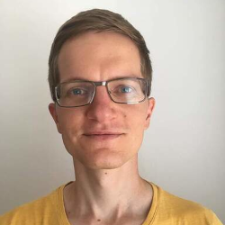

Dávid Kovács
Bratislava, Slovakia

Work Experience - Backend Developer
Vacuumlabs s.r.o. (Oct 2021 - Mar 2023)
- Greenfield bank in the Philippines (Sep 2022 – Dec 2022)
- Worked on microservices responsible for generating bank statements using Kotlin, Kafka, PostgreSQL
- Implemented paginated PDF generation using aggregated data from other microservices
- Twisto (Nov 2021 – Aug 2022) – Buy-Now-Pay-Later fintech company
- Developed backend services using Python, Django, PostgreSQL
- Worked on the integration of 3rd party eshops and merchants
- Worked on the definition and implementation of the GraphQL schema used for onboarding customers
- Worked on PDF generation for customer contracts with templating
- Internal projects
- Worked on an internal application for aggregating billing, staff, worklog, and vacation data from multiple sources using TypeScript, Node.js, PostgreSQL
- Worked on a greenfield bank backend using ThoughtMachine, Kotlin, Kafka, PostgreSQL
NIKÉ, spol. s r.o. (Feb 2015 - Sep 2021)
- Senior Perl developer, architect and team leader (Scrum)
- As the lead architect I was responsible for the unification of the intra-company flow of sport betting data (definition of technologies, schema, documentation, communication with other teams).
- As a team leader I was responsible for figuring out main implementation milestones.
- As a senior developer I was responsible for implementing critical parts of the system. I’ve:
- introduced unit testing, Docker containerization, automated Gitlab CI tests/builds
- unified application deployment using Salt Stack and Pillar
- developed backend services using Perl, MySQL, RabbitMQ, Kafka, Nginx, Docker
- implemented Apache Avro binary encoding in C (Perl::XS)
- implemented RabbitMQ to Kafka messaging shovel in Golang
- worked on DevOps (Linux, Bash, monitoring, logging, alerting, production support)
ISPER s.r.o. (2013 - 2014)
Education
Slovak University of Technology in Bratislava (2010 - 2015)
- Master of Engineering (Ing.)
- Faculty of Electrical Engineering and Information Technology
- Field of study: Telecommunications
Secondary school of Electrical Engineering in Bratislava (2006 - 2010)
- Field of study: Telecommunications
Skills and side projects
- Spoken languages: Hungarian, Slovak, English (+ un poco de Español)
-
AVR keyboard firmware written in (C++)
-
i3wm workspace renamer written in (Rust)
-
Android app for learning Spanish (Java)
-
Video screencast downloader (Elixir)
-
Utility for easy directory navigation (Bash)